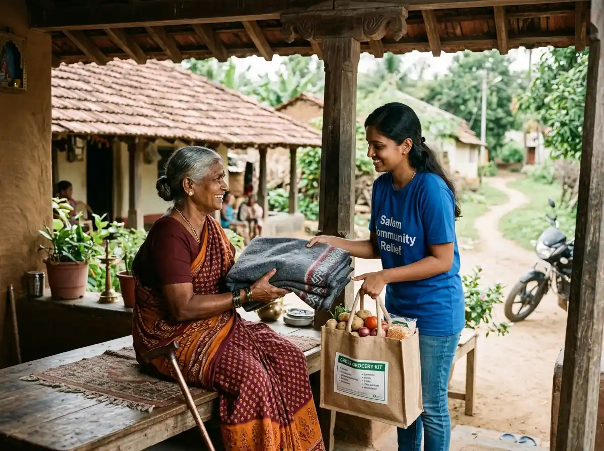
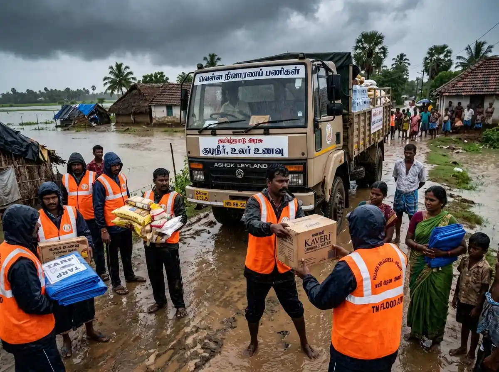

Stackly connects compassionate donors with verified grassroots causes across Salem, ensuring 100% transparent direct impact.
Every community drive is audited locally with live GPS check-ins.
Instant 80G tax exemption receipts and direct beneficiary photo updates.
"We believe every child deserves love, opportunity, and a future worth dreaming about."
Supplying school kits, study tabs, and evening shelter tutoring for first-generation rural learners across Salem.
View DetailsSubsidizing critical pediatric surgeries and emergency medicine kits for rural agricultural laborer families.
View DetailsCooking 2,400 daily nutritious meals and drilling solar borewells delivering fluoride-free clean tap water.
View DetailsRapid emergency flood supplies, thermal blankets, and mobile clinics deployed within 4 hours of distress.
View DetailsDiscover authentic grassroots stories of children, seniors, and farming families transformed across Salem through your direct contributions.
In rural Salem settlements near the Shevaroy foothills, families once struggled daily for clean drinking water. Thanks to our donors, community borewells now provide safe, fluoride-free water so children can attend school instead of walking miles to fetch water.


Slide to see how much positive change your single contribution can create across Salem households.
“A charity organization is built on the belief that every individual deserves dignity, opportunity, and hope. It serves as a bridge between those who want to help and those who need support, creating meaningful change through compassion,”